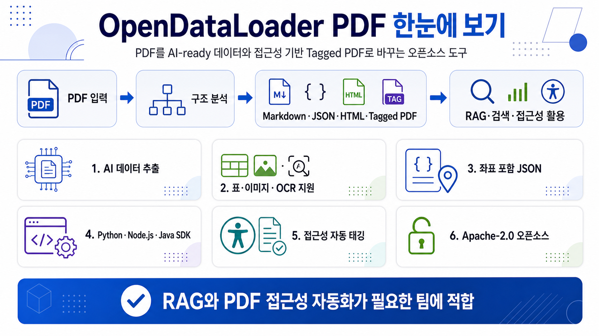

RAG 친화적 PDF 변환
단순 텍스트 추출을 넘어 문서 구조와 좌표를 포함한 JSON을 제공해 chunking, source citation, 검증 UI를 만들기 쉽습니다.

OpenDataLoader PDF는 PDF를 Markdown·JSON·HTML·Tagged PDF로 변환해 RAG, 검색, 문서 자동화, 접근성 워크플로에 바로 쓰게 하는 오픈소스 도구입니다.
저장소가 제안하는 사용 흐름은 PDF를 구조 분석한 뒤 목적별 포맷으로 내보내는 것입니다.
디지털 PDF, 스캔 PDF, 기존 Tagged PDF를 처리 대상으로 둡니다.
읽기 순서, 제목, 문단, 표, 이미지, 좌표 정보를 추출합니다.
Markdown, JSON, HTML, Tagged PDF 같은 실무 출력물을 만듭니다.
RAG 색인, 출처 인용, 검색, PDF 접근성 자동화에 연결합니다.
단순 텍스트 추출을 넘어 문서 구조와 좌표를 포함한 JSON을 제공해 chunking, source citation, 검증 UI를 만들기 쉽습니다.
README 기준 hybrid 모드에서 복잡한 표, 스캔 문서 OCR, 수식, 차트/이미지 설명까지 다루도록 설계되어 있습니다.
수작업 PDF remediation 비용을 줄이는 방향으로, 오픈소스 코어에서 레이아웃 분석과 자동 태깅을 제공합니다.
pip install opendataloader-pdf 후 convert()로 여러 PDF를 한 번에 변환합니다.
@opendataloader/pdf 패키지로 웹/서버 파이프라인에 붙일 수 있습니다.
Java 11+ 기반 코어와 Maven 패키지를 제공하며, 실제 구현 중심은 Java 모듈입니다.
2,401 forks, watchers 99개로 공개 관심도가 높습니다.
GitHub 릴리스가 활발하며, 최신 업데이트 기준일은 2026-06-20입니다.
pygount 기준 약 33.3k 코드 라인, Java 중심의 다언어 래퍼 구조입니다.
도입 전 현재 이슈와 릴리스 노트를 함께 확인하는 것이 좋습니다.
PDF 기반 RAG, 검색 색인, 문서 QA, 출처 좌표 표시, 대량 PDF 접근성 태깅을 고민하는 팀에 적합합니다.
복잡한 표·스캔 품질·한국어 OCR·PDF/UA 엔터프라이즈 범위는 실제 샘플과 요구사항으로 확인해야 합니다.
사내에서 자주 쓰는 스캔본, 표 많은 문서, 다단 문서, 이미지 포함 문서를 모아 테스트합니다.
Markdown 품질, JSON bounding box, 표 구조, 읽기 순서가 downstream RAG에 충분한지 봅니다.
fast local 모드와 hybrid/OCR 모드의 정확도·속도·인프라 요구를 나눠 판단합니다.